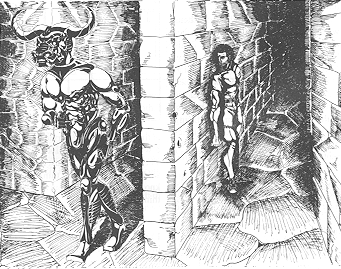
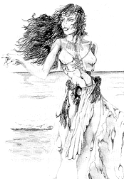

| Theseus Popalopos lived a quiet life as a computer programmer in California’s Silicon Valley. Every now and then a colleague at work would ask about his unusual name and he’d have to explain about his father, Aegeus Popalopos, owner of the Athenian Diner in New York City. Aegeus was very proud of his Greek heritage and he named his son Theseus because he was convinced the son was the direct descendant (after 132 generations) of King Theseus, the ruler of Athens. |
|
Theseus Popalopos knew the myths that surrounded King Theseus: how the Cretan King Minos created the labyrinth to hold the Minotaur, how he forced the Athenians to send youths to be sacrificed to the Minotaur, and how Theseus was to be sacrificed but instead killed the Minotaur and found his way out of the labyrinth. Popalopos thought these stories were interesting, but he felt they had nothing to do with him and the thought his father could be pretty boring when the subject of heritage came up. He later learned— |
 |
|
One Friday evening, as he returned from the weekly beer bash given by his company, he was set upon by five men who wrestled him to the ground, drugged him, and carried him off. He awoke three days later on a small tropical island in the Pacific. He was told that next month he would be sacrificed during the Great Festival. One of the natives who had brought him there explained that the island was inhabited by a tribe that practiced human sacrifice. It was part of their heritage but was rare in this modern age. (This had been explained to the native by Joseph Campbell, who had visited the island thirty years ago.) Theseus noticed that his fear was beginning to be replaced by boredom as he heard more talk about heritage. But he became very interested when the native told him how the sacrifice took place: the victim was placed in a labyrinth where he was eaten by a creature they called the Minotaur. And Theseus was more amazed when he learned that the ruler of the island was not a native but someone from a different island, the island of Crete. And this ruler called himself King Minos the 132nd. Theseus spent the next day exploring. The natives allowed him to walk freely since they knew there was no way he could escape. Theseus found the island to be rather pleasant, though he felt he would have enjoyed it a lot more if the natives hadn’t planned to make a human sacrifice out of him. As he walked along a beach he came upon the most beautiful woman he had ever seen. She smiled at him and said, “You are Theseus. I know all about you. I am Ariadne, daughter of King Minos.” Theseus felt a sudden bond with this woman, and he thought that here at last was someone who might make some sense. He pleaded with her to tell him who King Minos the 132nd was and why he planned to feed him to the Minotaur. |
|
 |
“You must try to understand my father,” she said. “He used to be one of the richest men in the world and owned a large shipping company headquartered in Crete. His company was destroyed by the corrupt government in Athens and he lost most of his money. He became depressed, retreated into drink and drugs, and worst of all, he spent all his time doing nothing but solving mazes that he found in various books. This last activity finally caused his mind to snap.
“He decided that Crete had suffered too long under Athens. In his maddened state, he felt that the way to make Crete preeminent again was to build a labyrinth and then revive the ancient ceremony where Athenian youths were sacrificed to the Minotaur. Father then declared himself to be King Minos the 132nd. He is from a Cretan family so he might well be a descendant of the ancient King Minos. At the same time he changed my name to Ariadne— |
|
Ariadne (or Debbie) paused in her long narrative. Theseus urged her to continue— “Father soon realized that it would be politically difficult to revive human sacrifice on Crete. While reading one of Joseph Campbell’s books, he learned about the natives on this island who practiced a rite that was surprisingly similar to the ancient Cretan rite. He took all the money he had left and he and I came to the island. Father became a great benefactor to the islanders and they were happy to make him their king. They also had no objection when he made a small modification to their sacrificial ceremony: the addition of a minotaur.” “Okay, wait a minute,” said Theseus. “So far this almost makes sense. But where did your father find a minotaur?” “Well,” replied Ariadne, “actually the Minotaur is just a robot.”
“A robot! I expected at least some sort of half-
“That’s exactly what my father wanted, and he went so far as to contract with Genes R Us, the San Jose, California, firm that specializes in recombinant DNA. They tried some gene-
“Father decided that if he couldn’t have a biological minotaur, he’d have to settle for a robot; so he hired Daedalus Incorporated, an artificial intelligence firm in San Jose, to create him one. It’s very effective. It doesn’t actually eat you, but if it catches you it will destroy you.”
“And I guess that’s the end of the story.”
“Well, not quite,” said Theseus. How did your father learn about me?”
“Oh, yes. He was flying to Athens where he planned to kidnap some Athenian youths to be the first victims in his labyrinth. He made a stopover in New York and had breakfast at the Athenian Diner. He heard the old Greek who owned the diner telling another patron that his son was a descendant of King Theseus. Father thought that a descendant of King Theseus would make a much better victim than just anyone from Athens; so he sent five of the natives to capture you, and here you are.”
Theseus and Ariadne talked on into the night, and soon they were declaring their love for each other. Ariadne said she would try to help Theseus escape from the labyrinth.
Ariadne met Theseus the next day and gave him a map she had drawn of the labyrinth. “I’m surprised the labyrinth is so simple,” Theseus said. “It would be easy for anyone to find the way out.”
“Yes,” she said, “it would be very simple if it didn’t have a minotaur in it. You are placed in the maze at the spot I’ve marked with a T. The Minotaur starts at the spot marked M. Unlike the ancient myth, you don’t have to kill the Minotaur. All you have to do is leave by the exit at the upper right. Once you’re outside the walls of the labyrinth, the Minotaur won’t follow you.” Back to Further Notes on the Theseus and the Minotaur Mazes |